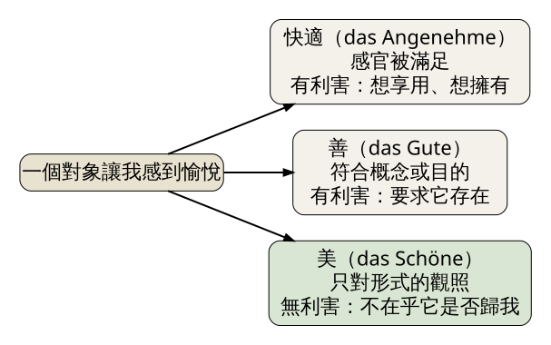
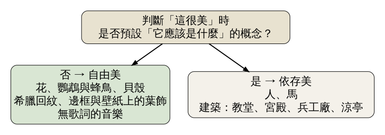
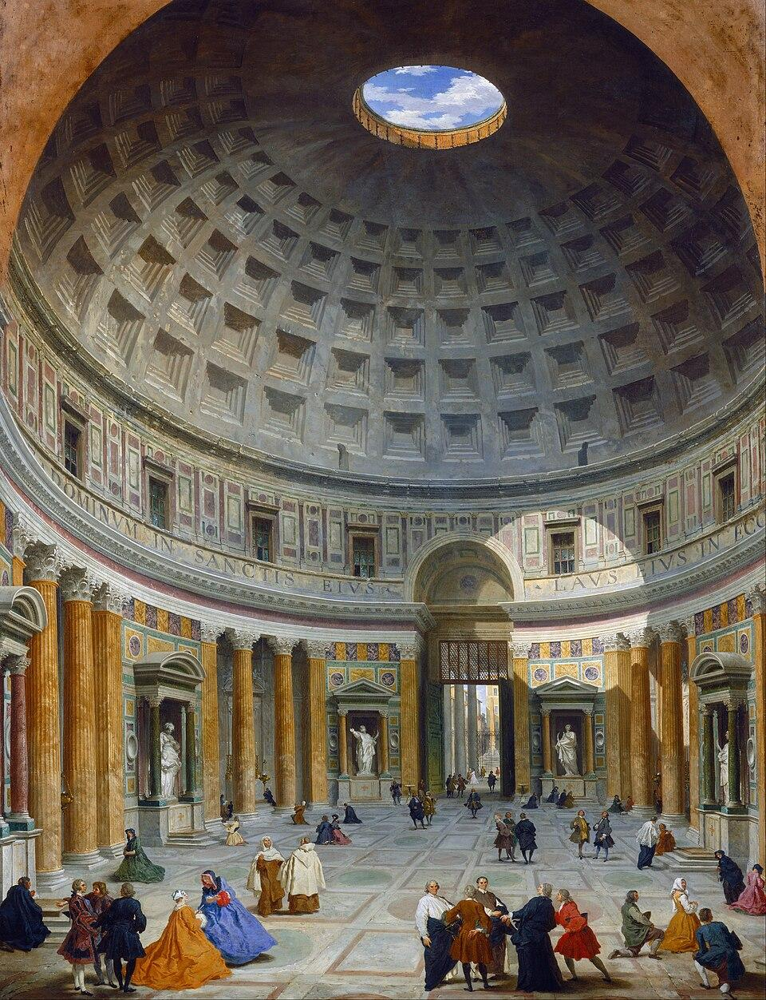
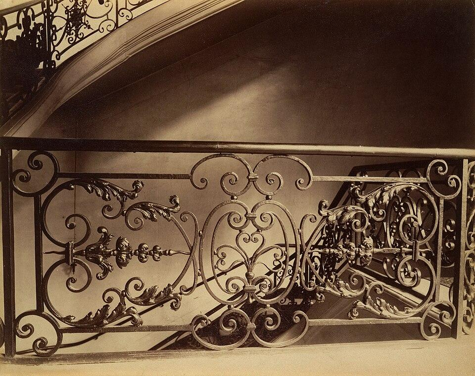

Kant 在 1790 年的《判斷力批判》裡主張：當我們說一樣東西「美」，那份愉悅跟想不想擁有它、用不用得到它無關。他把愉悅分成三種：快適、善、美，只有美的愉悅是「無利害」的。今天用羅馬萬神殿練習把這三種愉悅拆開，再用 Atget 的街頭照片看同一張圖如何被「用」也被「看」。
史料（原典內的例子） 《判斷力批判》第 2 節，Kant 設想有人站在一座宮殿前問他：「你覺得這座宮殿美嗎？」他列出幾種可能的回答。他可以說，自己不喜歡這種只為了讓人瞠目結舌而蓋的東西。他可以像盧梭那樣，痛罵權貴把百姓的血汗花在虛榮上。他也可以學一位易洛魁酋長，那位酋長說整個巴黎最讓他滿意的，是街上的小吃館。最後他還可以說：如果我在無人島上已經有一間夠舒服的小屋，根本懶得費力氣去蓋宮殿。
Kant 說這些回答都說得通，但沒有一個回答了問題。對方問的只是：光看著這座宮殿的樣子，我心裡有沒有愉悅？至於這座宮殿該不該存在、蓋它花了誰的錢、我住不住得進去，都是另一回事。
軼事 原典沒有交代易洛魁酋長這句話從哪裡來，本課程也查不到這位酋長是誰，所以只能當軼事看，用它理解 Kant 的論點即可。
這個場景離我們不遠。週末去看預售屋的樣品屋，走進客廳的頭幾秒，腦中多半在算：幾坪、採光朝哪、一坪多少錢、沙發放得下嗎。這些念頭都很正常，可是 Kant 會說，你在這幾秒裡回答的，都是「宮殿問題」的那幾種答案。
經典理論：Immanuel Kant，《判斷力批判》（Kritik der Urteilskraft），1790，第 1 至 5 節、第 16 節
Kant 把「這很美」叫做品味判斷。他從四個角度分析它，第一個角度談的就是今天的主題。下面是 Kant 的主張，不是已經證實的事實。
什麼叫「利害」 Kant 所說的利害（Interesse），是一種跟對象「是否存在」綁在一起的愉悅。肚子餓時看到一碗牛肉麵，你要的是這碗麵真的在桌上、真的進到你嘴裡；一張照片裡的牛肉麵救不了你。這種愉悅需要對象存在，所以帶著利害。
三種愉悅（見圖 1）

圖 1｜Kant 區分的三種愉悅。來源：本課程依 Kant《判斷力批判》（1790）第 3 至 5 節繪製。授權：本課程自製圖解。
Kant 接著推論：既然美的愉悅不靠個人的慾望與需要，那麼我說「這很美」的時候，就會期待別人也同意。說「這杯珍奶好喝」，我不會要求不愛甜的朋友跟我一樣；說「這座橋很美」，語氣卻像在陳述一件大家都該看得出來的事。這一點留到後面的課程再談。
自由美與依存美 第 16 節，Kant 又把美分成兩種（見圖 2）。花、鸚鵡、蜂鳥、貝殼、希臘回紋、邊框或壁紙上的葉飾、沒有歌詞的音樂，屬於「自由美」：欣賞它們時，不需要先知道它們應該是什麼。人、馬、建築則屬於「依存美」。他舉的建築例子是教堂、宮殿、兵工廠、涼亭。判斷一座教堂美不美，我們心中已經有「教堂該是什麼樣子」的概念，美就跟目的綁在一起了。

圖 2｜Kant 的自由美與依存美，方框內是原典舉的例子。來源：本課程依 Kant《判斷力批判》（1790）第 16 節繪製。授權：本課程自製圖解。
這兩節合起來對做空間的人很有用。Kant 沒有說建築不能談用途。他說的是，談建築的美，本來就混著目的；想練習純粹的觀看，要刻意把目的暫時放到一邊。
史料 萬神殿最早由 Agrippa 在西元前 27 年興建。現在看到的建築是 Hadrian 重建的，義大利國家旅遊網站記為西元 112 至 125 年（各資料的起訖年份略有出入），西元 609 年改為教堂，名為殉道者聖母堂（Santa Maria ad Martyres）。依同一資料，穹頂內徑約 43 公尺，頂端的圓孔（oculus）直徑約 9 公尺。
Giovanni Paolo Panini 約在 1734 年畫下它的內部（見圖 3）。畫面下方有幾十個人，有的穿神職人員的袍子，有的穿著鮮豔的長裙，有人跪著，有人聊天。我們可以拿這張畫，替站在裡面的人分類，看他們各自在享受哪一種愉悅。

圖 3｜萬神殿內部，穹頂中央的圓孔與右上方牆面上的一塊日光。來源：Giovanni Paolo Panini，〈Interior of the Pantheon, Rome〉，約 1734，美國國家藝廊（National Gallery of Art）典藏。授權：Public domain，來源頁面
第一種人：快適。從曬了一上午的廣場走進來，陰影與石材讓身體鬆下來。他喜歡的是這個空間對身體做的事，換一間一樣陰涼的地下道，他也會喜歡。
第二種人：善。一位工程師抬頭想的是：沒有鋼筋，這麼大的穹頂怎麼撐了將近一千九百年？一位信徒想的是：這是一座教堂，祭壇在哪裡、彌撒什麼時候開始？兩人的愉悅都來自「這棟房子很好地完成了它的任務」。
第三種人：美。他暫時不管這是神廟還是教堂，也不管它撐不撐得住，只看形狀：一個圓孔，外面一圈圈方格越往上越小，把眼睛一路引向那片天空；地板上方形和圓形交替鋪開；右上方牆面亮著一塊日光，下午它會移到別處。這些愉悅不要求他擁有這棟建築，也不要求他走進去避暑。看著畫，他也能得到一部分。
Kant 會補一句。依第 16 節，萬神殿是依存美。第三種人想完全丟開「這是一座神廟」的概念，其實很難；穹頂的莊嚴，有一部分正來自我們知道它是神聖的空間。比較接近自由美的，是穹頂上那一圈圈方格的重複：它們像壁紙上的葉飾，可以不靠任何目的就讓人看得出神。
回到樣品屋。設計師在客廳收尾時，可以刻意問三個不同的問題：坐起來舒不舒服？收納和動線夠不夠用？把家具功能全部忘掉，光看光線落在牆上的樣子、窗框切出的比例，還想不想多看幾秒？三個問題的答案常常互相拉扯，混在一起問，就只會聽到最大聲的那個。
史料 法國攝影師 Eugène Atget（1857–1927）在巴黎工作室門口掛著一塊牌子：「Documents pour artistes」，給藝術家用的資料。依 David Campany 的研究，買他照片的人有沙龍畫家、漫畫家、雕塑家、插畫家、舞臺設計師、建築師與都市規劃者，法國國家圖書館也向他買過整本相簿。這些顧客買照片，多半是為了「用」：畫家要背景，工匠要紋樣，舞臺設計師要街景。
1903 年他拍下巴黎巴克街 97 號（97 rue du Bac）的樓梯鐵欄杆（見圖 4）。對一位要打造鐵欄杆的工匠，這張照片的價值在於看清楚每一段渦卷怎麼接、葉飾怎麼收尾，屬於 Kant 的「善」，有用途、有利害。換一個人，他不打鐵也不畫畫，可能只是看著那些捲曲的線條在光裡起伏，看它們與後方弧形扶手的呼應。這種觀看貼近 Kant 在第 16 節提到的葉飾，接近自由美。

圖 4｜巴克街 97 號的樓梯鐵欄杆，渦卷與葉飾。來源：Eugène Atget，〈97 Rue du Bac〉，1903，蛋白相紙，大都會藝術博物館典藏。授權：Public domain，來源頁面
後來的事讓「用」與「看」更難分開。Man Ray 買過一張 Atget 的照片，1926 年 6 月登上《La Révolution surréaliste》第 7 期封面。Atget 原本把它題為〈日蝕，1912 年 4 月〉，雜誌改成〈最後的皈依〉，一群看日蝕的路人被轉成反宗教的諷刺；Atget 本人要求不要署名。Berenice Abbott 在 1925 年認識他，他過世後，Abbott 在 Julien Levy 的資助下買下大部分底片與照片，1968 年轉入紐約現代藝術博物館。今天我們在美術館看到的 Atget，最初是給工匠和畫家參考的商品。
誤解一：「無利害」就是冷淡、沒興趣。英文 disinterested 常被讀成 uninterested。Kant 說的無利害，是愉悅不依賴「想擁有、想使用」，愉悅本身可以很強烈。站在萬神殿圓孔下看得忘了時間的人，一點也不冷淡。
誤解二：Kant 主張藝術和建築應該沒有用途。第 2 至 5 節分析的是「判斷美時，愉悅從哪裡來」，沒有規定作品不能有功能。他在第 16 節直接把教堂、宮殿、兵工廠放進依存美，承認美可以和目的同時存在。
誤解三：無利害的觀看人人都做得到，跟出身無關。這一點有人反對。社會學家 Pierre Bourdieu 在《區判》（La Distinction，1979；英譯 Distinction，Richard Nice 譯，1984）主張，把形式擺在功能前面的「純粹凝視」，需要不必為生計操心的生活條件與教育養成，因此是特定階級的品味，被說成了普遍的標準。經典理論（社會學批評）：這是 Bourdieu 的主張，學界對他是否讀對 Kant 仍有爭論，今天的課程只介紹這個立場，不作定論。
看（5 分鐘） 找一個你常待的空間：自家客廳、公司茶水間、常去的咖啡店都可以。站在門口，在紙上畫三欄，標上「舒服」「好用」「只是好看」。把你注意到的東西寫進去，例如「冷氣很涼」放第一欄，「插座在桌邊」放第二欄，「午後光線在地上切出的斜線」放第三欄。寫不進第三欄的話，盯著同一個地方再看一分鐘。
做（10 分鐘） 用手機替同一個角落拍兩張照片。第一張當成租屋網站的照片：讓人看出坪數、採光、收納，越有用越好。第二張只拍形式：重複的磁磚、樓梯扶手的弧線、窗框投下的影子，拍到別人看不出這是哪個房間也沒關係。拍完後，把兩張照片並排看。
回顧（5 分鐘）
來源 | 類型 | 查核日期 |
經典理論（原典譯文） | 2026-10-30 | |
經典理論（建議延伸閱讀譯本） | 2026-10-30 | |
Stanford Encyclopedia of Philosophy, “Kant’s Aesthetics and Teleology”（2022 修訂） | 經典理論（學術導讀） | 2026-10-30 |
史料 | 2026-10-30 | |
史料 | 2026-10-30 | |
International Center of Photography：Atget, Escalier, 97 rue du Bac, 1903 | 史料 | 2026-10-30 |
CiNii 書目：Bourdieu, Distinction, trans. Richard Nice, Harvard University Press, 1984 | 經典理論（社會學批評） | 2026-10-30 |
圖 3 授權頁：Panini, Interior of the Pantheon, Rome（Public domain） | 圖片授權 | 2026-10-30 |
圖片授權 | 2026-10-30 |
延伸閱讀：完整譯本建議讀 Guyer 與 Matthews 的 Cambridge 英譯本；中譯本今天未查核版本資訊，故不列出。